Si vous ne supportez pas d'attendre des heures ou parfois des jours pour qu'un signal apparaisse enfin sur votre graphique, mais que passer en mode scalping sur une minute où vous entrez et sortez en littéralement quelques secondes vous paraît bien trop chaotique et stressant, j'ai le compromis idéal pour vous aujourd'hui. Dans cette vidéo, je vais vous présenter une stratégie de scalping en trois minutes qui vous offre juste assez de répit pour pouvoir réellement réfléchir, tout en vous permettant de saisir plusieurs opportunités par jour. Et le meilleur dans tout ça, c'est que j'ai demandé à Claude de concevoir l'intégralité de ce système pour en faire un indicateur sur TradingView.
Interface & Outils : Graphique TradingView intégré à la plateforme de trading BloFin.
Contenu textuel & Code : Graphique de prix BTCUSDT Perpetual Contract, barre d'outils temporelle (1s, 5s, 30s, 1m, 2m, etc.), données OHLCV en haut et échelle de prix verticale.
Action / Démonstration : Sélection de l'unité de temps d'une minute sur le graphique pour illustrer le scalping.
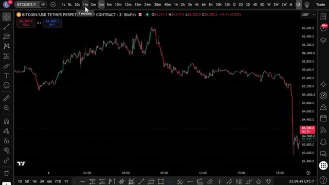
🔍 Agrandirdonc tu n'as même pas besoin de regarder le graphique manuellement. Je vais te montrer la stratégie exacte, le prompt exact, et comment le faire fonctionner sur ton propre graphique dans les prochaines minutes. Donc sans plus attendre, entrons dans le vif du sujet. Très bien, les gars, étape numéro un, inscrivez-vous sur un échange. Pour cette stratégie, nous allons utiliser Bybit. C'est l'un de mes principaux échanges pour le trading de produits dérivés, et ils proposent des bonus fous en ce moment.
Interface & Outils : TradingView, BloFin, Bybit
Contenu textuel & Code : Bitcoin/USD, indicateur de momentum/RSI, histogramme de volume, signaux d'achat/vente (Buy/Sell), page de parrainage (bonus de 30 100$).
Action / Démonstration : Analyse technique du cours du Bitcoin avec mise en évidence de configurations graphiques et de signaux de trading.
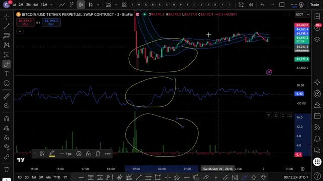
🔍 Agrandir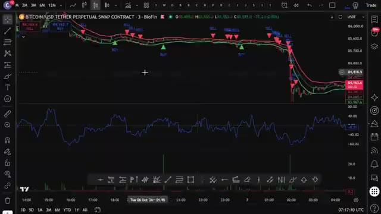
🔍 AgrandirMaintenant, voici la partie importante. Si Bybit n'est pas disponible dans votre pays ou que vous ne voulez pas faire de KYC, vous pouvez utiliser BingX comme alternative. Et le meilleur ? BingX n'exige pas de vérification KYC obligatoire pour le trading de base. BingX offre également jusqu'à 9 800 USDT de bonus de bienvenue. Je mettrai les deux liens en bas. Mais pour cette vidéo, nous allons utiliser Bybit. Pour vous inscrire sur Bybit et réclamer jusqu'à 30 000 USDT de bonus, cliquez sur le lien tout en haut de la description. Vous serez redirigé vers la page d'inscription où il vous suffit d'entrer vos informations et de créer un compte. Vous devrez compléter le KYC.
Interface & Outils : Site web de l'échange de cryptomonnaies BingX, interface d'inscription et pop-up de récompenses Bybit.
Contenu textuel & Code : Offres promotionnelles, bonus de bienvenue en USDT, statistiques de la plateforme (40M+ d'inscriptions, 18+ langues) et paliers de récompenses.
Action / Démonstration : Présentation des alternatives de plateformes d'échange de cryptomonnaies (BingX et Bybit) et de leurs bonus respectifs pour les nouveaux utilisateurs.
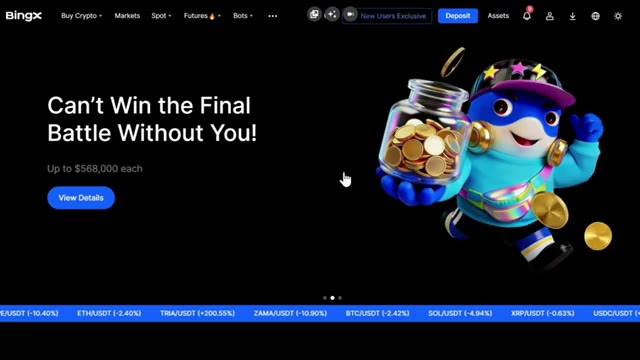
🔍 Agrandir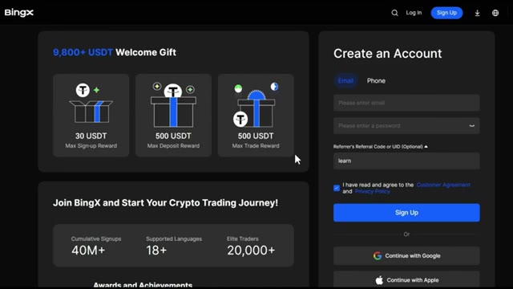
🔍 Agrandir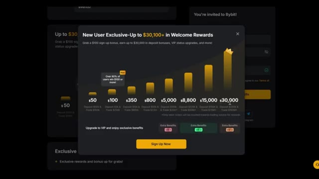
🔍 Agrandirvérification sur Bybit pour profiter de tous les services sur leur plateforme. Personnellement, je n'ai aucun problème avec le KYC. C'est rapide et sécurisé. Mais si vous préférez une option KYC non obligatoire, c'est pourquoi j'ai fourni BingX comme alternative ci-dessous. La deuxième étape consiste à déposer des fonds. Laissez-moi vous montrer comment déposer des fonds avant que nous ne plongions dans la stratégie. Une fois que vous êtes connecté à Bybit, cliquez sur Actifs dans le coin supérieur droit, puis cliquez sur Déposer. Choisissez la coin que vous voulez déposer. Je recommande l'USDT et sélectionnez le réseau blockchain correct. Assurez-vous de choisir le bon réseau pour éviter de perdre vos
Interface & Outils : Présentation ou face-caméra explicatif du trader sans interface logicielle partagée.
Contenu textuel & Code : Explications orales des stratégies et mise en contexte méthodologique du marché.
Action / Démonstration : Explications face caméra et analyse conceptuelle des marchés.
fonds. Nous confirmerons les détails, puis scannez le code QR ou copiez l'adresse de dépôt pour transférer vos fonds depuis votre portefeuille ou un autre échange. Si vous souhaitez déposer en monnaie fiat, cliquez sur Acheter des cryptos en haut du menu, puis sélectionnez Dépôt fiat. Choisissez votre devise, entrez le montant, sélectionnez votre mode de paiement et cliquez sur Continuer. Une fois vos fonds déposés, il est temps d'ouvrir une position. L'étape numéro trois consiste à ouvrir votre première position. Cliquez sur Trader dans le menu supérieur, puis sélectionnez Futures. Cela vous amènera à l'interface de trading. Choisissez l'actif que vous voulez
Interface & Outils : Présentation ou face-caméra explicatif du trader sans interface logicielle partagée.
Contenu textuel & Code : Explications orales des stratégies et mise en contexte méthodologique du marché.
Action / Démonstration : Explications face caméra et analyse conceptuelle des marchés.
pour trader dans le coin supérieur gauche. Pour cet exemple, j'utiliserai Bitcoin. Sélectionnez votre type d'ordre. Limite, au marché, ou conditionnel. Pour les débutants, je recommande de commencer par des ordres au marché pour une exécution instantanée. Entrez les détails de votre trade, tels que la quantité et le prix. Ensuite, choisissez votre type de effet de levier. Vous pouvez utiliser la marge croisée ou la marge isolée. Personnellement, j'utilise la marge isolée car elle limite votre risque à cette position spécifique uniquement. Vous pouvez utiliser jusqu'à 100 fois de levier sur un pari d'achat, mais pour les débutants, je recommande de commencer par 5 à 10 fois de levier jusqu'à ce que vous soyez
Interface & Outils : Bybit (plateforme d'échange de cryptomonnaies)
Contenu textuel & Code : Paire BTCUSDT Perpetuel, graphique en chandeliers japonais avec indicateur Volume SMA 9, carnet d'ordres (Order Book), et panneau de configuration des ordres de trading (Limit, Market, Conditional).
Action / Démonstration : Sélection de l'onglet 'Market' pour un ordre au marché sur l'interface de trading Bybit.
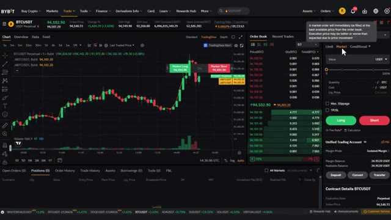
🔍 Agrandirconfortable. Confirmez les détails de votre commande, puis cliquez sur acheter slash long ou vendre slash short pour ouvrir votre position. Une fois votre ordre exécuté, vous pouvez le consulter sous l'onglet des positions au bas de l'écran. Maintenant que vous savez comment utiliser les produits dérivés sur Bybit, passons à la stratégie proprement dite qui peut vous faire réaliser des profits importants par jour. Très bien les gars, voici donc la vraie stratégie. J'appelle cela le scalp de compression de momentum et je l'utilise sur Bitcoin USDT, mais gardez à l'esprit que cela fonctionne tout aussi bien sur Ethereum, Solana, ou honnêtement n'importe quelle paire liquide. N'hésitez donc pas à l'appliquer à peu importe
Interface & Outils : Bybit, TradingView, BloFin
Contenu textuel & Code : Graphiques de prix en chandeliers, carnet d'ordres, panneau de configuration des ordres Market/Limit, boutons Long et Short, indicateur de volume.
Action / Démonstration : Navigation et présentation de l'interface de passage d'ordres d'achat et de vente sur une plateforme de produits dérivés crypto.
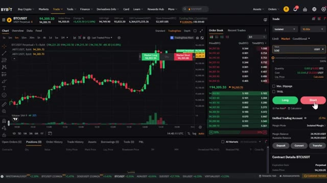
🔍 Agrandir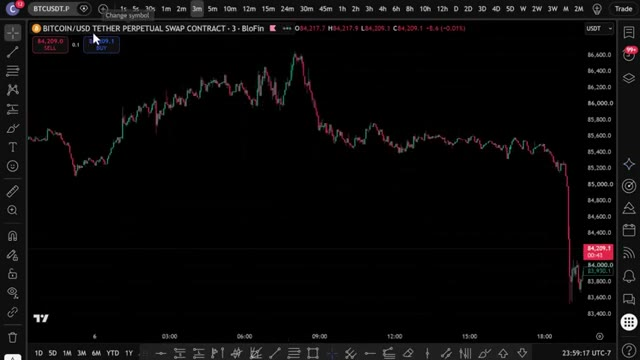
🔍 Agrandirmarché que vous tradez. Nous travaillons sur le graphique de trois minutes, pas d'une minute, parce qu'une minute est beaucoup trop bruyante et vous vous ferez avoir constamment. Pas de quinze minutes non plus, parce qu'alors vous attendez éternellement une configuration. Trois minutes est le juste milieu où vous obtenez des signaux fréquents, mais avez quand même quelques minutes pour réellement confirmer et exécuter au lieu de cliquer en panique. Très bien, avant d'aborder les indicateurs, un petit mot, si vous n'avez pas encore TradingView, cliquez sur le lien dans la description ci-dessous. Si vous achetez la version pro, vous obtiendrez une réduction et cela aide vraiment beaucoup la chaîne. Très bien, entrons dans le vif du sujet. L'indicateur numéro un est le Keltner
Interface & Outils : Présentation ou face-caméra explicatif du trader sans interface logicielle partagée.
Contenu textuel & Code : Explications orales des stratégies et mise en contexte méthodologique du marché.
Action / Démonstration : Explications face caméra et analyse conceptuelle des marchés.
canal. Contrairement aux bandes de Bollinger, les canaux de Keltner sont construits à partir de l'ATR, ils réagissent donc plus nettement à une réelle expansion de la volatilité plutôt qu'à un simple écart type. Nous utilisons ceci pour capturer le moment exact de la cassure lorsque le prix sort du canal. C'est notre déclencheur de volatilité. Pour activer le canal de Keltner, allez simplement dans les indicateurs en haut de votre graphique, recherchez le canal de Keltner et cliquez dessus pour l'ajouter. Ensuite, cliquez sur la petite icône de paramètres à côté. Modifiez la longueur à 20 et changez le multiplicateur à 1,5. Une fois que c'est fait, cliquez simplement sur OK et vous verrez le
Interface & Outils : Interface de trading BloFin avec graphiques de type TradingView.
Contenu textuel & Code : Graphique Bitcoin/USD Tether Perpetual Swap, indicateur technique Canaux de Keltner (KC 20 2 close), prix du BTC autour de 85 400 - 86 500 USDT.
Action / Démonstration : Analyse graphique de la volatilité et des cassures de prix par rapport aux canaux de Keltner.
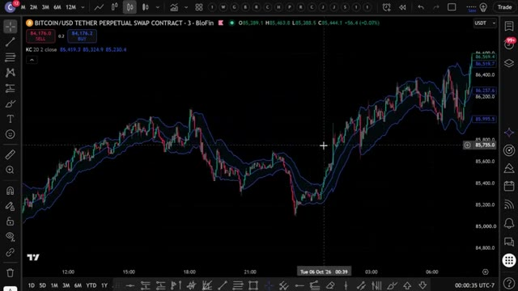
🔍 Agrandirtracé directement sur votre graphique. L'indicateur numéro deux est le CMO, ou Chande Momentum Oscillator. Celui-ci est beaucoup moins utilisé que le RSI, mais il est en réalité plus réactif sur les unités de temps inférieures. Lorsque le CMO est supérieur à zéro, le momentum est haussier. En dessous de zéro, le momentum est baissier. Nous l'utilisons pour confirmer la direction, car nous ne voulons pas d'une cassure sans véritable momentum derrière elle. Pour activer celui-ci, allez à nouveau dans les indicateurs, recherchez Chande Momentum Oscillator, et cliquez dessus pour l'ajouter à votre graphique. Cliquez ensuite sur les paramètres et changez la période pour 14.
Interface & Outils : TradingView / BloFin
Contenu textuel & Code : Paire BITCOIN/USD TETHER PERPETUAL SWAP CONTRACT, indicateur KC (Keltner Channels) sur le graphique principal et ChandeMO (Chande Momentum Oscillator) dans le panneau inférieur.
Action / Démonstration : Analyse technique du graphique et affichage de l'indicateur CMO.
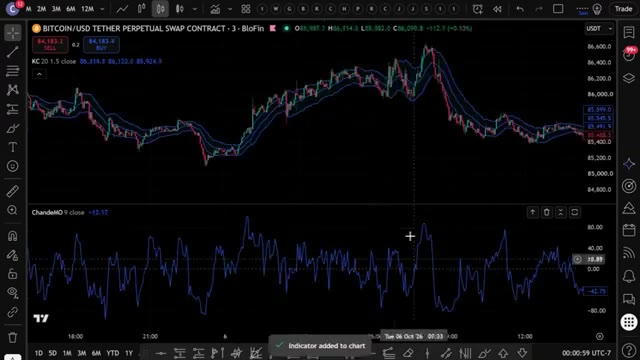
🔍 AgrandirCliquez sur OK et vous le verrez tracé dans son propre panneau sous votre graphique avec une ligne zéro qui passe au milieu. L'indicateur numéro trois est le volume relatif ou votre R vol. Celui-ci compare le volume de la bougie actuelle au volume moyen sur les 20 dernières barres. Si le R vol est supérieur à 1,5, cela signifie que nous voyons une réelle participation, et pas seulement une mèche aléatoire. C'est notre filtre de confirmation par le volume, afin de ne pas négocier sur des casses vides. Pour l'activer, allez dans les indicateurs une fois de plus, recherchez le volume relatif et ajoutez-le à votre graphique. Cliquez sur les paramètres et définissez la longueur sur 20.
Interface & Outils : TradingView / Blofin (Contrat Perpetuel Bitcoin/USDT)
Contenu textuel & Code : Keltner Channels (KC 20 1.5), Chande Momentum Oscillator (ChandeMO 14 close), Rel vol (3 20 Cumulative).
Action / Démonstration : Analyse graphique et présentation des panneaux d'indicateurs techniques (momentum et volume relatif).
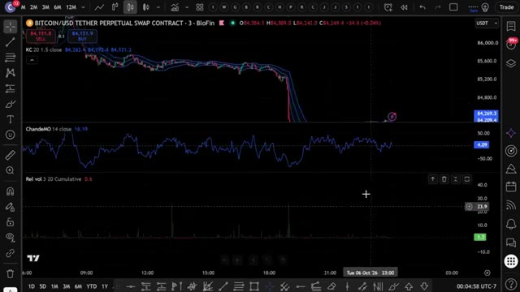
🔍 AgrandirCliquez sur OK, et vous le verrez s'afficher sous forme d'histogramme avec une ligne horizontale située à 1,5, exactement là où nous voulons notre seuil de confirmation. Et c'est aussi simple que ça, les gars, vous avez les trois indicateurs empilés sur votre graphique exactement comme nous en avons besoin pour cette stratégie. Voici ce qu'il faut réellement rechercher. Pour une configuration acheteuse, le prix dépasse le canal de Keltner supérieur. Le CMO est supérieur à zéro, ce qui signifie un momentum haussier, et le R vol est supérieur à 1,5 fois la moyenne, et la bougie clôture en vert. Lorsque les trois s'alignent à la clôture de la même bougie de trois minutes, c'est votre signal d'achat.
Interface & Outils : Plateforme de graphiques TradingView intégrée à l'exchange Blofin.
Contenu textuel & Code : Paire BITCOIN/USD TETHER PERPETUAL SWAP, avec les indicateurs techniques Keltner Channels (KC 20 1.5), ChandeMO (14 close) et Rel vol (1D 20 Cumulative).
Action / Démonstration : Visualisation des trois indicateurs empilés sur le graphique, affichant le seuil de confirmation et l'histogramme de volume relatif.
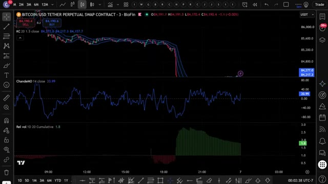
🔍 AgrandirPour une configuration courte, c'est l'inverse. Le prix casse sous le canal de Keltner inférieur. Le CMO est sous zéro, la dynamique est baissière, et le R-ball est supérieur à 1,5 fois la moyenne, et la bougie clôture en rouge. Maintenant, parlons de la gestion des risques. Pour votre stop loss, placez-le juste en dehors du canal de Keltner, de la ligne médiane, ou au niveau du swing high ou low récent. Pour la prise de bénéfices, personnellement, j'aime alléger mes positions progressivement.
Interface & Outils : Interface TradingView intégrée à la plateforme BloFin.
Contenu textuel & Code : Paire BITCOIN/USD TETHER PERPETUAL SWAP CONTRACT en unité de temps 3 minutes. Canaux de Keltner sur les prix, CMO (Chande Momentum Oscillator) en sous-fenêtre sous la ligne zéro, et histogramme de volumes en bas.
Action / Démonstration : Analyse d'une configuration de vente à découvert (short) avec cassure sous le canal de Keltner inférieur et CMO négatif.
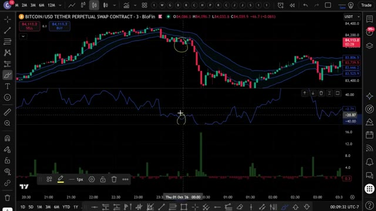
🔍 AgrandirPremier objectif à un ratio risque/rendement de un pour un, puis je fais suivre le reste en utilisant la ligne médiane de Keltner comme stop dynamique. Et pour l'effet de levier, gardez-le bas, 5x à 10x maximum. Comme nous faisons du scalping, vous ne voulez pas qu'une mèche vous liquide. Cette stratégie fonctionne parce que vous combinez l'expansion de la volatilité, la direction du momentum et la confirmation du volume, trois signaux complètement indépendants qui s'alignent rarement tous, à moins qu'un événement réel ne se produise. C'est ce qui vous évite les faux signaux. Au lieu de regarder le graphique toute la journée et de faire cela manuellement, j'ai donné exactement ceci
Interface & Outils : Graphique de type TradingView / BloFin affichant un contrat perpétuel Bitcoin.
Contenu textuel & Code : Bandes de Keltner sur le graphique des prix, indicateur de momentum (oscillateur bleu) et histogramme de volume en bas, ainsi qu'un outil de position long (rectangle vert/rouge).
Action / Démonstration : Analyse graphique illustrant la configuration d'une position de scalping avec gestion du risque.
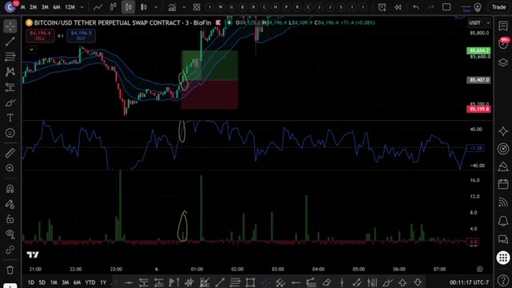
🔍 Agrandirstratégie à Claude et je lui ai demandé de m'écrire un script Pine complet, pour que TradingView puisse détecter automatiquement ces signaux pour moi. Et voici le prompt que j'ai utilisé. Je vais l'afficher à l'écran dès maintenant pour que vous puissiez le copier à l'identique. C'est tout. C'est le prompt complet. Vous le collez dans Claude. J'utilise Claude Code ici. Et en quelques secondes, il crache un script Pine complet et fonctionnel dans un fichier bloc-notes.
Interface & Outils : TradingView, Claude Code
Contenu textuel & Code : Keltner Channels, Chande Momentum Oscillator (CMO), Relative Volume (RVOL), règles de signal d'achat et de vente, code Pine Script v5
Action / Démonstration : Présentation du prompt textuel utilisé avec l'assistant IA Claude pour automatiser la détection des signaux de trading.
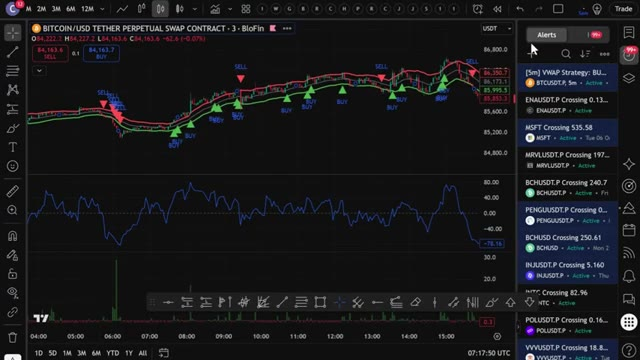
🔍 Agrandir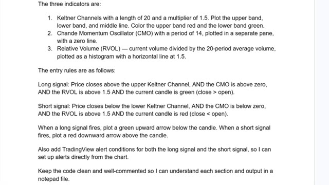
🔍 Agrandir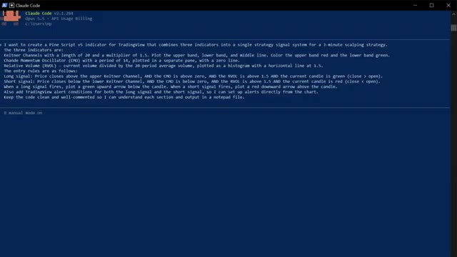
🔍 AgrandirMaintenant, ce prompt exact, ainsi que le script Pine utilisé dans cette vidéo, est disponible dans mon groupe privé. Vous pouvez trouver le lien en bas. Ouvrez le fichier bloc-notes, appuyez sur contrôle plus A pour tout sélectionner le code, puis sur ctrl plus c pour le copier, c'est tout ce dont vous avez besoin. Maintenant, mettons-le dans TradingView. Ouvrez TradingView et allez sur n'importe quel graphique, j'utiliserai Bitcoin sur l'unité de temps de trois minutes. En bas de l'écran, cliquez sur l'onglet de l'éditeur de script Pine, si vous ne le voyez pas, allez dans la barre d'outils inférieure et cliquez sur l'éditeur de script Pine. Une fois l'éditeur ouvert, vous y verrez du code par défaut, sélectionnez-le entièrement et supprimez-le, puis collez le code que Claude vient de vous donner.
Interface & Outils : Bloc-notes (Notepad) et plateforme de trading TradingView / Blofin.
Contenu textuel & Code : Code source Pine Script pour un système de scalpling à 3 minutes (calculs de volume, conditions d'entrée long/short, tracés graphiques) et graphique de prix BTC/USDT.
Action / Démonstration : Sélection du code source dans le bloc-notes et visualisation du graphique de trading des cryptomonnaies.
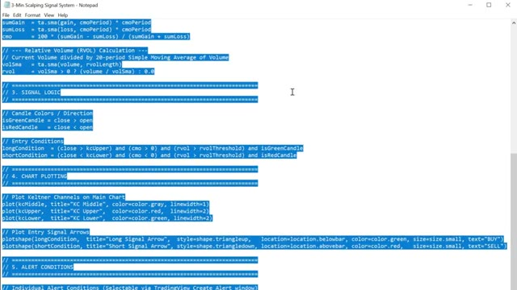
🔍 Agrandir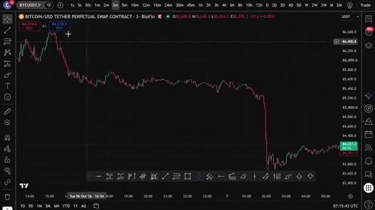
🔍 Agrandircliquez sur Ajouter au graphique. C'est le bouton en haut à droite de l'éditeur PineScript. TradingView va compiler le script et l'appliquer directement sur votre graphique. Et voilà. Vous pouvez voir les canaux de Keltner sur le graphique, le panneau CMO en dessous, l'histogramme R vol, et les signaux d'achat et de vente tracés automatiquement. Flèches vertes pour les achats, flèches rouges pour les ventes. Tout se déclenche exactement de la manière dont nous l'avons configuré manuellement. Mais maintenant, cela le fait pour vous automatiquement. Maintenant, pour configurer des alarmes, cliquez sur l'icône de réveil en haut de TradingView, sélectionnez Créer une alerte, et dans le menu déroulant Condition, vous verrez les conditions d'alerte que Claude a ajoutées, signal d'achat et signal de vente.
Interface & Outils : TradingView / BloFin
Contenu textuel & Code : Canaux de Keltner, signaux BUY/SELL avec flèches, indicateur CMO (Chande Momentum Oscillator), histogramme de volume et chandeliers japonais.
Action / Démonstration : Visualisation du graphique appliqué avec les indicateurs techniques et les signaux de trading générés par le script.
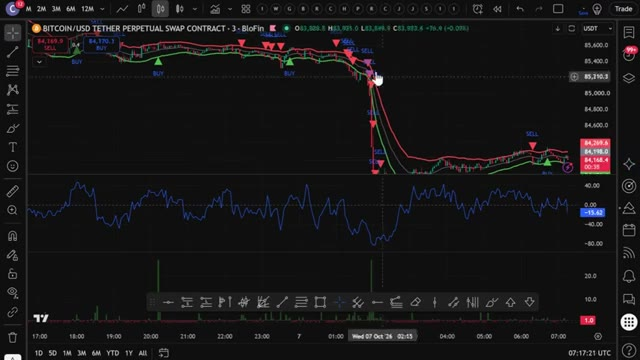
🔍 AgrandirConfigurez-les et TradingView vous préviendra dès qu'un signal se déclenche, directement sur votre téléphone. Donc maintenant, au lieu de surveiller trois indicateurs manuellement toutes les trois minutes, TradingView fait tout le travail pour vous. Dès que les trois conditions s'alignent, vous recevez une alerte. Vous vérifiez, vous exécutez sur Bybit, et c'est terminé.
Interface & Outils : TradingView
Contenu textuel & Code : Graphique Bitcoin/USD Tether Perpetual Swap Contract (en unité de temps 3 minutes), indicateurs de type Scalp Strategy avec signaux d'achat/vente (BUY/SELL), panneau d'alertes à droite listant plusieurs actifs (BTCUSDT.P, ENAUSDT.P, MSFT, etc.) avec leurs statuts actifs.
Action / Démonstration : Visualisation et gestion des alertes techniques configurées pour automatiser la surveillance des signaux de trading sur plusieurs marchés.
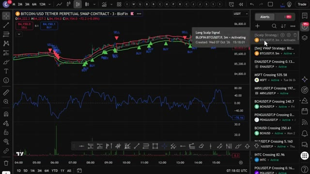
🔍 AgrandirMaintenant, si vous voulez aller encore plus loin et faire en sorte qu'il effectue des trades automatiquement sur votre exchange dès qu'un signal est déclenché, j'ai ce qu'il vous faut. J'ai créé un groupe privé où je partage tous mes cas d'utilisation pour Claude Code, qu'il s'agisse de l'intégrer à Telegram, TradingView, ou de rechercher des baleines sur Hyperliquid. Tout cela automatiquement. Tout ce que je vous ai montré aujourd'hui, tout se trouve à l'intérieur du groupe.
Interface & Outils : MEXC, site web d'Alex Carter Trading, Hyperliquid Leaderboard.
Contenu textuel & Code : Graphique de prix BTCUSDT, carnets d'ordres, liste de fonctionnalités de Claude Code pour TradingView (Chart Reading, Chart Control), tableau de classement Hyperliquid avec valeurs de comptes et PnL.
Action / Démonstration : Exécution d'un ordre de trading automatisé sur MEXC et présentation des capacités logicielles d'intégration.
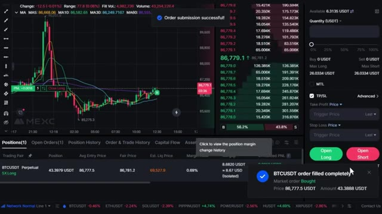
🔍 Agrandir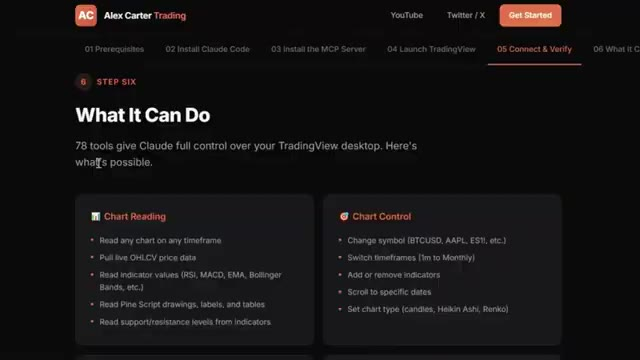
🔍 Agrandir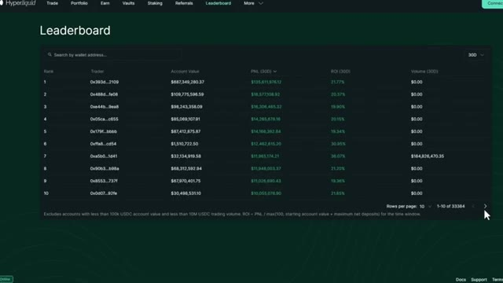
🔍 AgrandirEt j'ajoute constamment de nouvelles choses, de nouvelles stratégies, de nouveaux prompts, de nouvelles intégrations. Chaque fois que je construis quelque chose de nouveau, ça va directement là-dedans. Le prix est de 79,99 $ par mois. Et honnêtement, quand on pense à ce que c'est réellement, la configuration de trading IA la plus avancée disponible pour les traders particuliers en ce moment, constamment mise à jour avec tout inclus.
Interface & Outils : Navigateur web affichant la plateforme de vente Whop et des pages de documentation technique.
Contenu textuel & Code : Offre d'abonnement "AI Trade Edge" à 79,99 $/mois (réduit de 99,99 $), et liste des 78 outils pour contrôler TradingView (Chart Reading, Chart Control).
Action / Démonstration : Présentation de la tarification et de la valeur de l'offre par le créateur.
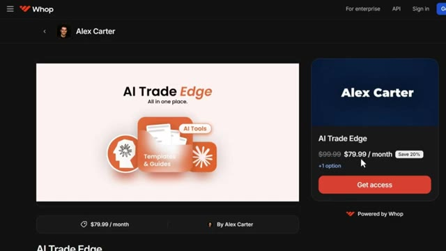
🔍 AgrandirÀ l'intérieur, il y a aussi un cours complet de trading agentique. 2,5 heures. Du débutant à l'expert. Aucune base en programmation n'est nécessaire. D'ici la fin, vous aurez votre propre système de trading par IA en direct, ce que la plupart des traders particuliers ne savent même pas être possible en ce moment. 79,99 $ par mois. Un seul bon trade couvre ce montant. Et les 100 premiers membres bloquent ce tarif de façon permanente. Après cela, le prix augmente. Le lien est dans la description.
Interface & Outils : Plateforme de formation en ligne et site web Whop (interface e-commerce/communauté).
Contenu textuel & Code : Titres de modules de formation sur le trading agentique, l'intégration de webhooks, les bots de trading IA, et la grille tarifaire d'accès à la communauté.
Action / Démonstration : Présentation du contenu et du programme détaillé du cours complet de trading par IA inclus dans l'offre.
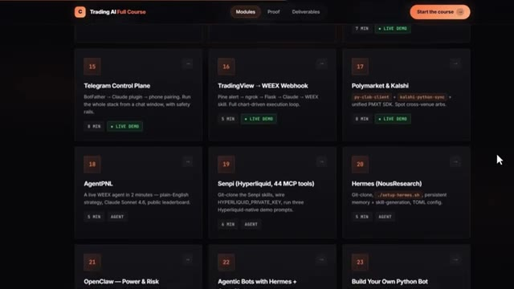
🔍 Agrandir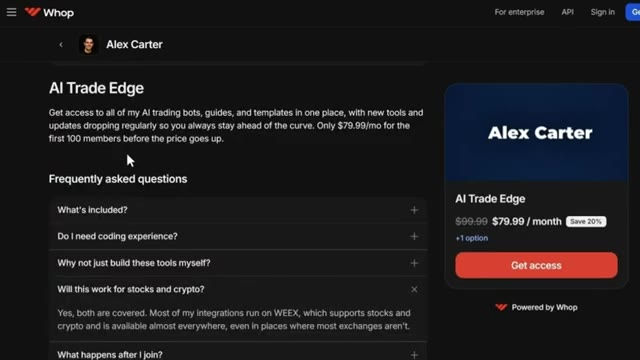
🔍 AgrandirVous ne pouvez vraiment pas vous permettre de rater ça. Et voilà les gars. C'est comme ça qu'on prend une stratégie, qu'on la donne à Claude, et qu'on obtient un travail en PineScript sur TradingView. Pas de codage, pas de surveillance manuelle des graphiques. Si vous voulez vraiment mettre cela en pratique, assurez-vous d'utiliser Bybit ou BingX. Puisque cette stratégie y fonctionne beaucoup plus fluidement que sur la plupart des autres bourses. Les liens sont en bas. Si vous voulez voir une démonstration complète de la façon dont je trade en utilisant uniquement mon télégramme, la démonstration complète de tous les cas d'utilisation sur TradingView, et comment je trace automatiquement les plus gros trades des baleines sur Hyperliquid, cliquez sur la vidéo qui apparaît à l'écran dès maintenant.
Interface & Outils : TradingView, terminal de commande CLI, plateforme BingX.
Contenu textuel & Code : Signaux Buy/Sell sur graphique, indicateur RSI, tableau de confluence multi-timeframe (EMA, RSI, MACD), niveaux de support/résistance et recommandations d'entrée/stop-loss.
Action / Démonstration : Présentation d'un graphique technique et d'une analyse automatisée multi-timeframe via un terminal.
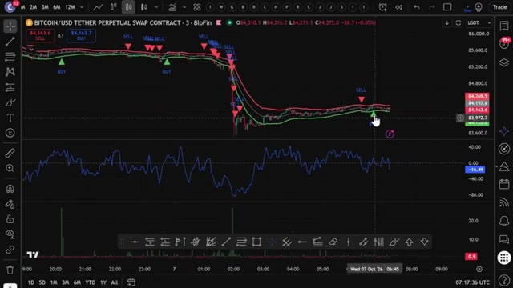
🔍 Agrandir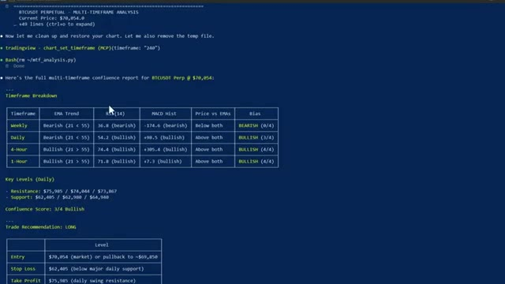
🔍 AgrandirEt si vous voulez le guide complet étape par étape sur la façon de construire votre propre système de trading agentique en utilisant Claude, cette vidéo apparaît également à l'écran. Allez la voir ensuite. Si vous avez trouvé cela utile, laissez un pouce levé. Cela aide vraiment la chaîne. Abonnez-vous si ce n'est pas déjà fait, et je vous vois dans la prochaine.
Interface & Outils : Aucune interface visible.
Contenu textuel & Code : Aucun contenu technique, graphique ou textuel affiché.
Action / Démonstration : Aucune action ou manipulation en cours.